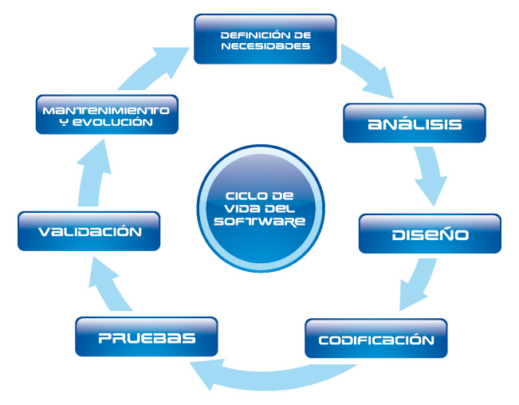

Instituto Tecnológico de Culiacán
Significado del Logotipo
Los directivos de la institución junto con el H. Consejo Estudiantil y los Jefes de Departamento de aquel entonces, tuvieron la inquietud de tener un logotipo que simbolizara a la institución. De tal manera decidieron lanzar el diseño de un logotipo a concurso, sin embargo, sólo recibieron gráficos como objetos vestidos de laureles, el lábaro patrio, el águila que conforma la bandera de México, sin lograr convencer a las autoridades para establecer alguno de esos logotipos como imagen institucional.


mantenimiento de software © 2015